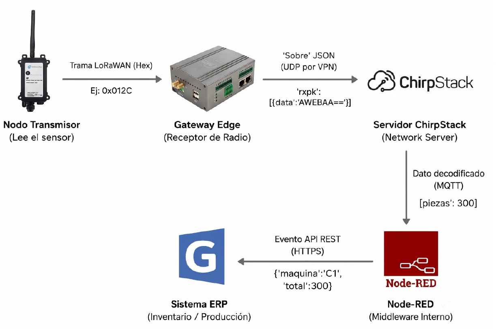

La Mariposa S.A. · Tucumán
Automatización industrial — IIoT con LoRaWAN
Diseño de una arquitectura para dejar de registrar producción e inventarios de forma manual y llevar esos datos a los sistemas de gestión.
El problema
Los conteos de producción, niveles de tanque y consumo de fluidos se cargaban manualmente. No había una arquitectura común para conectar la instrumentación de planta con el ERP.
Mi aporte
- Diseñé el recorrido completo: desde sensores de campo hasta ERP y tableros.
- Definí sensores de nivel, conteo óptico y caudal, junto con las interfaces necesarias.
- Especifiqué nodos LoRaWAN AU915, gateway, ChirpStack, MQTT, Node-RED y API REST.
- Preparé requisitos técnicos y un procedimiento de puesta en marcha.
Arquitectura
Sensores → nodos LoRaWAN AU915 → gateway → ChirpStack → MQTT → Node-RED → API REST → ERP / dashboards

Recorrido de los datos desde el nodo de campo hasta el ERP.
Estado
El diseño y la documentación quedaron terminados. La instalación física no llegó a realizarse durante mi participación.